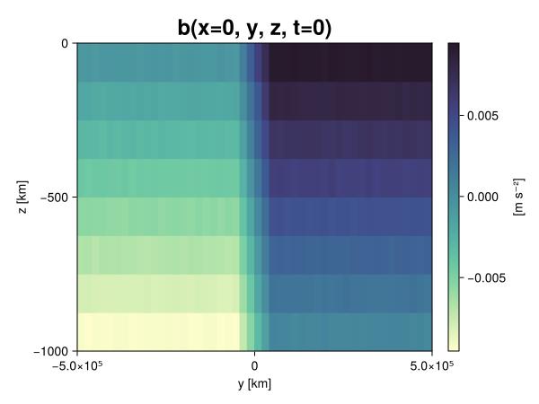
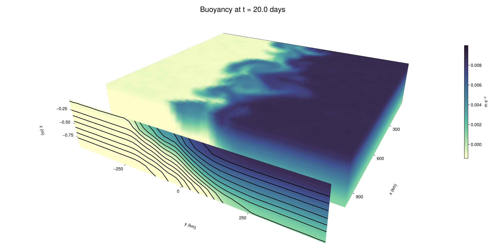

Baroclinic adjustment
In this example, we simulate the evolution and equilibration of a baroclinically unstable front.
Install dependencies
First let's make sure we have all required packages installed.
using Pkg
pkg"add Oceananigans, CairoMakie"using Oceananigans
using Oceananigans.UnitsGrid
We use a three-dimensional channel that is periodic in the x direction:
Lx = 1000kilometers # east-west extent [m]
Ly = 1000kilometers # north-south extent [m]
Lz = 1kilometers # depth [m]
grid = RectilinearGrid(size = (48, 48, 8),
x = (0, Lx),
y = (-Ly/2, Ly/2),
z = (-Lz, 0),
topology = (Periodic, Bounded, Bounded))48×48×8 RectilinearGrid{Float64, Periodic, Bounded, Bounded} on CPU with 3×3×3 halo
├── Periodic x ∈ [0.0, 1.0e6) regularly spaced with Δx=20833.3
├── Bounded y ∈ [-500000.0, 500000.0] regularly spaced with Δy=20833.3
└── Bounded z ∈ [-1000.0, 0.0] regularly spaced with Δz=125.0Model
We built a HydrostaticFreeSurfaceModel with an ImplicitFreeSurface solver. Regarding Coriolis, we use a beta-plane centered at 45° South.
model = HydrostaticFreeSurfaceModel(; grid,
coriolis = BetaPlane(latitude = -45),
buoyancy = BuoyancyTracer(),
tracers = :b,
momentum_advection = WENO(),
tracer_advection = WENO())HydrostaticFreeSurfaceModel{CPU, RectilinearGrid}(time = 0 seconds, iteration = 0)
├── grid: 48×48×8 RectilinearGrid{Float64, Periodic, Bounded, Bounded} on CPU with 3×3×3 halo
├── timestepper: QuasiAdamsBashforth2TimeStepper
├── tracers: b
├── closure: Nothing
├── buoyancy: BuoyancyTracer with ĝ = NegativeZDirection()
├── free surface: ImplicitFreeSurface with gravitational acceleration 9.80665 m s⁻²
│ └── solver: FFTImplicitFreeSurfaceSolver
├── advection scheme:
│ ├── momentum: WENO reconstruction order 5
│ └── b: WENO reconstruction order 5
└── coriolis: BetaPlane{Float64}We start our simulation from rest with a baroclinically unstable buoyancy distribution. We use ramp(y, Δy), defined below, to specify a front with width Δy and horizontal buoyancy gradient M². We impose the front on top of a vertical buoyancy gradient N² and a bit of noise.
"""
ramp(y, Δy)
Linear ramp from 0 to 1 between -Δy/2 and +Δy/2.
For example:
```
y < -Δy/2 => ramp = 0
-Δy/2 < y < -Δy/2 => ramp = y / Δy
y > Δy/2 => ramp = 1
```
"""
ramp(y, Δy) = min(max(0, y/Δy + 1/2), 1)
N² = 1e-5 # [s⁻²] buoyancy frequency / stratification
M² = 1e-7 # [s⁻²] horizontal buoyancy gradient
Δy = 100kilometers # width of the region of the front
Δb = Δy * M² # buoyancy jump associated with the front
ϵb = 1e-2 * Δb # noise amplitude
bᵢ(x, y, z) = N² * z + Δb * ramp(y, Δy) + ϵb * randn()
set!(model, b=bᵢ)Let's visualize the initial buoyancy distribution.
using CairoMakie
# Build coordinates with units of kilometers
x, y, z = 1e-3 .* nodes(grid, (Center(), Center(), Center()))
b = model.tracers.b
fig, ax, hm = heatmap(view(b, 1, :, :),
colormap = :deep,
axis = (xlabel = "y [km]",
ylabel = "z [km]",
title = "b(x=0, y, z, t=0)",
titlesize = 24))
Colorbar(fig[1, 2], hm, label = "[m s⁻²]")
fig
Simulation
Now let's build a Simulation.
simulation = Simulation(model, Δt=20minutes, stop_time=20days)Simulation of HydrostaticFreeSurfaceModel{CPU, RectilinearGrid}(time = 0 seconds, iteration = 0)
├── Next time step: 20 minutes
├── Elapsed wall time: 0 seconds
├── Wall time per iteration: NaN days
├── Stop time: 20 days
├── Stop iteration : Inf
├── Wall time limit: Inf
├── Callbacks: OrderedDict with 4 entries:
│ ├── stop_time_exceeded => Callback of stop_time_exceeded on IterationInterval(1)
│ ├── stop_iteration_exceeded => Callback of stop_iteration_exceeded on IterationInterval(1)
│ ├── wall_time_limit_exceeded => Callback of wall_time_limit_exceeded on IterationInterval(1)
│ └── nan_checker => Callback of NaNChecker for u on IterationInterval(100)
├── Output writers: OrderedDict with no entries
└── Diagnostics: OrderedDict with no entriesWe add a TimeStepWizard callback to adapt the simulation's time-step,
conjure_time_step_wizard!(simulation, IterationInterval(20), cfl=0.2, max_Δt=20minutes)Also, we add a callback to print a message about how the simulation is going,
using Printf
wall_clock = Ref(time_ns())
function print_progress(sim)
u, v, w = model.velocities
progress = 100 * (time(sim) / sim.stop_time)
elapsed = (time_ns() - wall_clock[]) / 1e9
@printf("[%05.2f%%] i: %d, t: %s, wall time: %s, max(u): (%6.3e, %6.3e, %6.3e) m/s, next Δt: %s\n",
progress, iteration(sim), prettytime(sim), prettytime(elapsed),
maximum(abs, u), maximum(abs, v), maximum(abs, w), prettytime(sim.Δt))
wall_clock[] = time_ns()
return nothing
end
add_callback!(simulation, print_progress, IterationInterval(100))Diagnostics/Output
Here, we save the buoyancy, $b$, at the edges of our domain as well as the zonal ($x$) average of buoyancy.
u, v, w = model.velocities
ζ = ∂x(v) - ∂y(u)
B = Average(b, dims=1)
U = Average(u, dims=1)
V = Average(v, dims=1)
filename = "baroclinic_adjustment"
save_fields_interval = 0.5day
slicers = (east = (grid.Nx, :, :),
north = (:, grid.Ny, :),
bottom = (:, :, 1),
top = (:, :, grid.Nz))
for side in keys(slicers)
indices = slicers[side]
simulation.output_writers[side] = JLD2OutputWriter(model, (; b, ζ);
filename = filename * "_$(side)_slice",
schedule = TimeInterval(save_fields_interval),
overwrite_existing = true,
indices)
end
simulation.output_writers[:zonal] = JLD2OutputWriter(model, (; b=B, u=U, v=V);
filename = filename * "_zonal_average",
schedule = TimeInterval(save_fields_interval),
overwrite_existing = true)JLD2OutputWriter scheduled on TimeInterval(12 hours):
├── filepath: ./baroclinic_adjustment_zonal_average.jld2
├── 3 outputs: (b, u, v)
├── array type: Array{Float64}
├── including: [:grid, :coriolis, :buoyancy, :closure]
├── file_splitting: NoFileSplitting
└── file size: 30.7 KiBNow we're ready to run.
@info "Running the simulation..."
run!(simulation)
@info "Simulation completed in " * prettytime(simulation.run_wall_time)[ Info: Running the simulation...
[ Info: Initializing simulation...
[00.00%] i: 0, t: 0 seconds, wall time: 21.960 seconds, max(u): (0.000e+00, 0.000e+00, 0.000e+00) m/s, next Δt: 20 minutes
[ Info: ... simulation initialization complete (23.771 seconds)
[ Info: Executing initial time step...
[ Info: ... initial time step complete (18.463 seconds).
[06.94%] i: 100, t: 1.389 days, wall time: 33.508 seconds, max(u): (1.273e-01, 1.227e-01, 1.470e-03) m/s, next Δt: 20 minutes
[13.89%] i: 200, t: 2.778 days, wall time: 1.244 seconds, max(u): (2.186e-01, 1.803e-01, 1.728e-03) m/s, next Δt: 20 minutes
[20.83%] i: 300, t: 4.167 days, wall time: 1.025 seconds, max(u): (3.119e-01, 2.818e-01, 1.795e-03) m/s, next Δt: 20 minutes
[27.78%] i: 400, t: 5.556 days, wall time: 1.100 seconds, max(u): (3.788e-01, 4.243e-01, 2.055e-03) m/s, next Δt: 20 minutes
[34.72%] i: 500, t: 6.944 days, wall time: 898.143 ms, max(u): (5.425e-01, 6.847e-01, 2.408e-03) m/s, next Δt: 20 minutes
[41.67%] i: 600, t: 8.333 days, wall time: 1.007 seconds, max(u): (6.607e-01, 9.525e-01, 2.400e-03) m/s, next Δt: 20 minutes
[48.61%] i: 700, t: 9.722 days, wall time: 966.095 ms, max(u): (1.051e+00, 1.247e+00, 4.283e-03) m/s, next Δt: 20 minutes
[55.56%] i: 800, t: 11.111 days, wall time: 885.875 ms, max(u): (1.326e+00, 1.225e+00, 5.473e-03) m/s, next Δt: 20 minutes
[62.50%] i: 900, t: 12.500 days, wall time: 845.523 ms, max(u): (1.413e+00, 1.256e+00, 4.571e-03) m/s, next Δt: 20 minutes
[69.44%] i: 1000, t: 13.889 days, wall time: 945.244 ms, max(u): (1.528e+00, 1.111e+00, 4.287e-03) m/s, next Δt: 20 minutes
[76.39%] i: 1100, t: 15.278 days, wall time: 908.451 ms, max(u): (1.430e+00, 1.109e+00, 3.994e-03) m/s, next Δt: 20 minutes
[83.33%] i: 1200, t: 16.667 days, wall time: 975.825 ms, max(u): (1.302e+00, 1.108e+00, 3.265e-03) m/s, next Δt: 20 minutes
[90.28%] i: 1300, t: 18.056 days, wall time: 886.228 ms, max(u): (1.348e+00, 9.925e-01, 3.201e-03) m/s, next Δt: 20 minutes
[97.22%] i: 1400, t: 19.444 days, wall time: 958.927 ms, max(u): (1.218e+00, 1.056e+00, 2.702e-03) m/s, next Δt: 20 minutes
[ Info: Simulation is stopping after running for 59.354 seconds.
[ Info: Simulation time 20 days equals or exceeds stop time 20 days.
[ Info: Simulation completed in 59.387 seconds
Visualization
All that's left is to make a pretty movie. Actually, we make two visualizations here. First, we illustrate how to make a 3D visualization with Makie's Axis3 and Makie.surface. Then we make a movie in 2D. We use CairoMakie in this example, but note that using GLMakie is more convenient on a system with OpenGL, as figures will be displayed on the screen.
using CairoMakieThree-dimensional visualization
We load the saved buoyancy output on the top, north, and east surface as FieldTimeSerieses.
filename = "baroclinic_adjustment"
sides = keys(slicers)
slice_filenames = NamedTuple(side => filename * "_$(side)_slice.jld2" for side in sides)
b_timeserieses = (east = FieldTimeSeries(slice_filenames.east, "b"),
north = FieldTimeSeries(slice_filenames.north, "b"),
top = FieldTimeSeries(slice_filenames.top, "b"))
B_timeseries = FieldTimeSeries(filename * "_zonal_average.jld2", "b")
times = B_timeseries.times
grid = B_timeseries.grid48×48×8 RectilinearGrid{Float64, Periodic, Bounded, Bounded} on CPU with 3×3×3 halo
├── Periodic x ∈ [0.0, 1.0e6) regularly spaced with Δx=20833.3
├── Bounded y ∈ [-500000.0, 500000.0] regularly spaced with Δy=20833.3
└── Bounded z ∈ [-1000.0, 0.0] regularly spaced with Δz=125.0We build the coordinates. We rescale horizontal coordinates to kilometers.
xb, yb, zb = nodes(b_timeserieses.east)
xb = xb ./ 1e3 # convert m -> km
yb = yb ./ 1e3 # convert m -> km
Nx, Ny, Nz = size(grid)
x_xz = repeat(x, 1, Nz)
y_xz_north = y[end] * ones(Nx, Nz)
z_xz = repeat(reshape(z, 1, Nz), Nx, 1)
x_yz_east = x[end] * ones(Ny, Nz)
y_yz = repeat(y, 1, Nz)
z_yz = repeat(reshape(z, 1, Nz), grid.Ny, 1)
x_xy = x
y_xy = y
z_xy_top = z[end] * ones(grid.Nx, grid.Ny)Then we create a 3D axis. We use zonal_slice_displacement to control where the plot of the instantaneous zonal average flow is located.
fig = Figure(size = (1600, 800))
zonal_slice_displacement = 1.2
ax = Axis3(fig[2, 1],
aspect=(1, 1, 1/5),
xlabel = "x (km)",
ylabel = "y (km)",
zlabel = "z (m)",
xlabeloffset = 100,
ylabeloffset = 100,
zlabeloffset = 100,
limits = ((x[1], zonal_slice_displacement * x[end]), (y[1], y[end]), (z[1], z[end])),
elevation = 0.45,
azimuth = 6.8,
xspinesvisible = false,
zgridvisible = false,
protrusions = 40,
perspectiveness = 0.7)Axis3()We use data from the final savepoint for the 3D plot. Note that this plot can easily be animated by using Makie's Observable. To dive into Observables, check out Makie.jl's Documentation.
n = length(times)41Now let's make a 3D plot of the buoyancy and in front of it we'll use the zonally-averaged output to plot the instantaneous zonal-average of the buoyancy.
b_slices = (east = interior(b_timeserieses.east[n], 1, :, :),
north = interior(b_timeserieses.north[n], :, 1, :),
top = interior(b_timeserieses.top[n], :, :, 1))
# Zonally-averaged buoyancy
B = interior(B_timeseries[n], 1, :, :)
clims = 1.1 .* extrema(b_timeserieses.top[n][:])
kwargs = (colorrange=clims, colormap=:deep, shading=NoShading)
surface!(ax, x_yz_east, y_yz, z_yz; color = b_slices.east, kwargs...)
surface!(ax, x_xz, y_xz_north, z_xz; color = b_slices.north, kwargs...)
surface!(ax, x_xy, y_xy, z_xy_top; color = b_slices.top, kwargs...)
sf = surface!(ax, zonal_slice_displacement .* x_yz_east, y_yz, z_yz; color = B, kwargs...)
contour!(ax, y, z, B; transformation = (:yz, zonal_slice_displacement * x[end]),
levels = 15, linewidth = 2, color = :black)
Colorbar(fig[2, 2], sf, label = "m s⁻²", height = Relative(0.4), tellheight=false)
title = "Buoyancy at t = " * string(round(times[n] / day, digits=1)) * " days"
fig[1, 1:2] = Label(fig, title; fontsize = 24, tellwidth = false, padding = (0, 0, -120, 0))
rowgap!(fig.layout, 1, Relative(-0.2))
colgap!(fig.layout, 1, Relative(-0.1))
save("baroclinic_adjustment_3d.png", fig)
Two-dimensional movie
We make a 2D movie that shows buoyancy $b$ and vertical vorticity $ζ$ at the surface, as well as the zonally-averaged zonal and meridional velocities $U$ and $V$ in the $(y, z)$ plane. First we load the FieldTimeSeries and extract the additional coordinates we'll need for plotting
ζ_timeseries = FieldTimeSeries(slice_filenames.top, "ζ")
U_timeseries = FieldTimeSeries(filename * "_zonal_average.jld2", "u")
B_timeseries = FieldTimeSeries(filename * "_zonal_average.jld2", "b")
V_timeseries = FieldTimeSeries(filename * "_zonal_average.jld2", "v")
xζ, yζ, zζ = nodes(ζ_timeseries)
yv = ynodes(V_timeseries)
xζ = xζ ./ 1e3 # convert m -> km
yζ = yζ ./ 1e3 # convert m -> km
yv = yv ./ 1e3 # convert m -> km49-element Vector{Float64}:
-500.0
-479.1666666666667
-458.3333333333333
-437.5
-416.6666666666667
-395.8333333333333
-375.0
-354.1666666666667
-333.3333333333333
-312.5
-291.6666666666667
-270.8333333333333
-250.0
-229.16666666666666
-208.33333333333334
-187.5
-166.66666666666666
-145.83333333333334
-125.0
-104.16666666666667
-83.33333333333333
-62.5
-41.666666666666664
-20.833333333333332
0.0
20.833333333333332
41.666666666666664
62.5
83.33333333333333
104.16666666666667
125.0
145.83333333333334
166.66666666666666
187.5
208.33333333333334
229.16666666666666
250.0
270.8333333333333
291.6666666666667
312.5
333.3333333333333
354.1666666666667
375.0
395.8333333333333
416.6666666666667
437.5
458.3333333333333
479.1666666666667
500.0Next, we set up a plot with 4 panels. The top panels are large and square, while the bottom panels get a reduced aspect ratio through rowsize!.
set_theme!(Theme(fontsize=24))
fig = Figure(size=(1800, 1000))
axb = Axis(fig[1, 2], xlabel="x (km)", ylabel="y (km)", aspect=1)
axζ = Axis(fig[1, 3], xlabel="x (km)", ylabel="y (km)", aspect=1, yaxisposition=:right)
axu = Axis(fig[2, 2], xlabel="y (km)", ylabel="z (m)")
axv = Axis(fig[2, 3], xlabel="y (km)", ylabel="z (m)", yaxisposition=:right)
rowsize!(fig.layout, 2, Relative(0.3))To prepare a plot for animation, we index the timeseries with an Observable,
n = Observable(1)
b_top = @lift interior(b_timeserieses.top[$n], :, :, 1)
ζ_top = @lift interior(ζ_timeseries[$n], :, :, 1)
U = @lift interior(U_timeseries[$n], 1, :, :)
V = @lift interior(V_timeseries[$n], 1, :, :)
B = @lift interior(B_timeseries[$n], 1, :, :)Observable([-0.009363862247385921 -0.008137542916660715 -0.006888884005719059 -0.005614878231236326 -0.004378502573099866 -0.0031285703207801613 -0.00186133519801225 -0.0006395774024327139; -0.009369826501683077 -0.008095550077356383 -0.006873374333199643 -0.005625296234185586 -0.004368105158158647 -0.0031444677860716 -0.0018461937676943674 -0.0006330666515206104; -0.009369344531970117 -0.008107472838136098 -0.006866041464507296 -0.005590287953298294 -0.004384604893600474 -0.0031118977260468556 -0.0018782499907777693 -0.0006638477576729175; -0.009381599916161837 -0.008117779866693433 -0.006890182288014431 -0.005612689016635632 -0.004375936055459836 -0.0031185962483580815 -0.0018971512019241674 -0.0006241206362914461; -0.0093770250769622 -0.008138831800755052 -0.006875177706306824 -0.005633269362889246 -0.004413496527344026 -0.0031306311579225323 -0.001870557751912625 -0.0006274444243274012; -0.009367490320843788 -0.008124455996912914 -0.00686137443922485 -0.005641741982854606 -0.004369327035954378 -0.0031182625119934803 -0.001861736662148955 -0.0006398764980252152; -0.009376151706329258 -0.008135683470542165 -0.006860843441085058 -0.00564017013241479 -0.004383273743085788 -0.003128911360202212 -0.0018791658305010916 -0.0006058220405333004; -0.009387642766169178 -0.008120257232327609 -0.006875386451134602 -0.00560260897754272 -0.004381781307167087 -0.0031573613110732848 -0.0018402044028441253 -0.000597981562619292; -0.009403548913927022 -0.008102014962011126 -0.006893806028303094 -0.005635215564587448 -0.0043674754872479946 -0.0031286402501913054 -0.0018517548121402712 -0.0006219402653450807; -0.009349414817131705 -0.008097582802176742 -0.006881787708951836 -0.005621564814768039 -0.0043775881050933385 -0.0031170203604527283 -0.0018606989051499062 -0.0006273786494160116; -0.00934354799742273 -0.008119008131893196 -0.006867482642418244 -0.0055945090549524455 -0.004369531675254219 -0.00310632082400517 -0.0018753790659901527 -0.0006303750672564593; -0.009363643539223858 -0.008137659843118253 -0.006875723658978868 -0.005608670611209818 -0.004384539103725108 -0.0031097455008650323 -0.001859126873910307 -0.0006332826239824589; -0.009376862983181472 -0.008116044857701737 -0.006882558808644417 -0.005640532996492402 -0.004388829869425715 -0.0030898524622460025 -0.0018916885935424462 -0.0006123163977329091; -0.009363954803716797 -0.00811467482358802 -0.0068605156180339315 -0.005625473835768588 -0.004375152088119901 -0.0031262210429121146 -0.0018747756964110445 -0.0006320061829401575; -0.009388401438610553 -0.008140811396301196 -0.006881048165483829 -0.005622795669262431 -0.004358174639791491 -0.003124558110047695 -0.0018872106696330535 -0.0006514984311962449; -0.009358119062096548 -0.008140717302691019 -0.006883984100374195 -0.0056218185748357595 -0.004363728295862572 -0.0031096434278956413 -0.0018673210504203692 -0.0006018360276185118; -0.009371755019152304 -0.008124764209117558 -0.006871365763201877 -0.005669871468817502 -0.004371320282753828 -0.0031376537400214766 -0.001877531740762101 -0.0006432221300456952; -0.009372796281616363 -0.008112733576523474 -0.0068822846575794655 -0.005639004913839893 -0.0043917302586242305 -0.003115794470521634 -0.0018742479163393513 -0.0006159278481414608; -0.009371843963814049 -0.008132193311863859 -0.0068534217226910235 -0.00562918906330787 -0.004363650345890364 -0.0031320003619270975 -0.001867352921319936 -0.0006413430851868628; -0.009393575265796391 -0.008136974727279625 -0.006895956847509946 -0.005609808585022971 -0.0043688957961407135 -0.003096301828253455 -0.0018811396002605485 -0.0006170186138559778; -0.009373060258736639 -0.008119422925263567 -0.006876190337527471 -0.005629426253279404 -0.004393720487114255 -0.0031417294346227794 -0.001877452451586403 -0.0006505692767573287; -0.009402173000953072 -0.008119967889146951 -0.00685727496942852 -0.005630195703490759 -0.004366069967182259 -0.0031161458000210393 -0.0018757871722884045 -0.0006256417745717219; -0.007503688323480723 -0.006249534349121761 -0.005001333936407943 -0.0037556875819807233 -0.002487711769342078 -0.0012368750759772565 -1.9547879911210163e-5 0.001254260727592729; -0.005398471173780943 -0.004168281802327392 -0.0029088402797242774 -0.0016649478710138148 -0.00038680872660032417 0.0008518199211703018 0.002086005805936634 0.003344277609059197; -0.003333528529014134 -0.002071762245441819 -0.0008440523698839177 0.00040415814696530733 0.0016549769876753964 0.0029286726535798896 0.004158315915047115 0.005415630110344817; -0.0012403027664658736 1.873621397515302e-5 0.0012544389530922226 0.0025057133818910146 0.0037572027875198122 0.005004390006084472 0.0062382753380433205 0.007507867875000357; 0.0006244259115287388 0.0018761637301576133 0.0031308078986828276 0.004376667293094542 0.005608608547287099 0.006882681359266282 0.00815194835420076 0.009390974861710916; 0.0006360597534604542 0.0018817304631906326 0.0031473602611153204 0.004358540027608903 0.0056254162919953795 0.006879629690775446 0.008122185108987661 0.00936909543906978; 0.0006250649763774699 0.0019019499785420419 0.00313839992730678 0.004375061188174826 0.005650806847019701 0.006881354956787798 0.008133562582356611 0.009376989533630345; 0.0006214388382352604 0.001880125705884348 0.003143041643319737 0.004398181604559102 0.005642420697235834 0.006856862810470773 0.008113904746302372 0.009383859747416663; 0.0006173760107784449 0.0018528118208139246 0.0031520376746259106 0.004353451900946172 0.0056265887287324685 0.006881384198199537 0.008109652065376635 0.009384027376067573; 0.0006200453065811768 0.0018732816813413385 0.003139498136749305 0.0043801631084695305 0.005639006625203932 0.00687642575400426 0.008109420550622921 0.009370084438434609; 0.0006221396715624887 0.0018697546358227644 0.003104538771142789 0.004373186382899443 0.005624699987814602 0.006861948554347463 0.008129536178020626 0.009366564316592671; 0.000606319665263404 0.0018799508709512302 0.0031274786088932526 0.004358307904131387 0.005649660852698111 0.006881236194910465 0.00811090827741359 0.009408911092987256; 0.0006330666400116963 0.001874971996806339 0.0031222981842814698 0.004373788597873883 0.005647025392804786 0.006891606609779075 0.008130687999664115 0.009364917295416548; 0.000630509324277553 0.00189875033775473 0.0031384578593206904 0.004380797643123637 0.005633631467049036 0.0068718900207921305 0.008134847548352565 0.009370317905382562; 0.0006483742007797893 0.0018862727486343882 0.0031211006888357752 0.004378539736449629 0.005593046045313652 0.006882342175607649 0.00813618340579471 0.009372656661812325; 0.0006225540560725569 0.001859227592386852 0.0031139841281765976 0.004393758954038024 0.0056298736648409805 0.0068727703451350345 0.00811370604339317 0.00936618806741719; 0.0006361982925786389 0.0018705682184953522 0.0031427416453074894 0.004358013788180413 0.005618068977793047 0.006882372922423001 0.008133855881253529 0.009395886212644892; 0.0006069822626474339 0.0018494582993481105 0.0031193788119606124 0.004364570235502325 0.005618188348595667 0.006871287358344295 0.00809623650872268 0.009361036507600928; 0.0006175763828864924 0.0018834161428296905 0.0031272368955221133 0.004376674300617126 0.00562301925447298 0.006897128150242407 0.008135164211187646 0.009385307104357728; 0.0006424128273045752 0.0018779922305538165 0.003100149848352981 0.004358169364618761 0.005617556943540373 0.006893808860311809 0.00813557207342473 0.00935408725675869; 0.000644005618281681 0.0018369547868275129 0.003113843857292225 0.004353057861398676 0.005635501645537976 0.00688378858265206 0.008115299440224938 0.009370641064225438; 0.000623871183877963 0.0018408025602022046 0.003133034082495325 0.00438245731520454 0.00562252318308355 0.006899544610093549 0.0081288401533936 0.009355544671526474; 0.0006355810785486289 0.0018664046028636604 0.003108406576874926 0.004348095356577579 0.005655297805049471 0.006896720575159956 0.008120687973972874 0.009376605030625084; 0.0006152996066622705 0.0018890646161496968 0.0031270598002695973 0.004379955778326674 0.005630765216551464 0.006896750042043979 0.0081582912803207 0.009361434795076548; 0.0006481089096518522 0.0018858457371469211 0.003118350451052708 0.004392095476293504 0.0056145373146029255 0.0068611610559711 0.008126124329750708 0.00937412034740156; 0.0006107479495095527 0.0018886616189302062 0.003117993776634987 0.004395805945516572 0.005635860011840711 0.006864492128200774 0.008109035401406029 0.009359255822443876])
and then build our plot:
hm = heatmap!(axb, xb, yb, b_top, colorrange=(0, Δb), colormap=:thermal)
Colorbar(fig[1, 1], hm, flipaxis=false, label="Surface b(x, y) (m s⁻²)")
hm = heatmap!(axζ, xζ, yζ, ζ_top, colorrange=(-5e-5, 5e-5), colormap=:balance)
Colorbar(fig[1, 4], hm, label="Surface ζ(x, y) (s⁻¹)")
hm = heatmap!(axu, yb, zb, U; colorrange=(-5e-1, 5e-1), colormap=:balance)
Colorbar(fig[2, 1], hm, flipaxis=false, label="Zonally-averaged U(y, z) (m s⁻¹)")
contour!(axu, yb, zb, B; levels=15, color=:black)
hm = heatmap!(axv, yv, zb, V; colorrange=(-1e-1, 1e-1), colormap=:balance)
Colorbar(fig[2, 4], hm, label="Zonally-averaged V(y, z) (m s⁻¹)")
contour!(axv, yb, zb, B; levels=15, color=:black)Finally, we're ready to record the movie.
frames = 1:length(times)
record(fig, filename * ".mp4", frames, framerate=8) do i
n[] = i
endThis page was generated using Literate.jl.